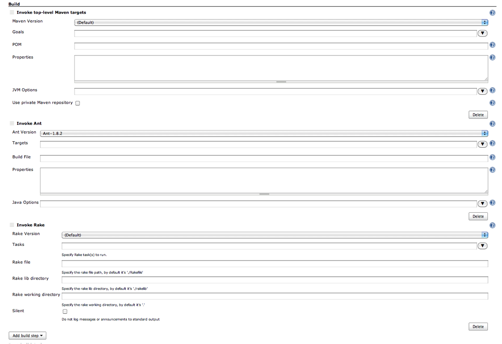

Leiningen-Jenkins plugin Requirements Specification
Version 0.1
Don Jackson
Project Overview:
This
document provides requirements (and a wish list) for a proposed Leiningen
plugin for the Jenkins Continuous
Integration Server.
Jenkins
(formerly named Hudson) is a Continuous Integration server that is used to
automate the build/deployment of software projects.
Jenkins is
implemented in Java.
Leiningen
is build tool for projects written in Clojure (a dialect of Lisp), Clojure
projects compile and run on the JVM.
I'm looking
for someone to build a Jenkins plugin for Leiningen.
The plugin
could be written in one of two languages:
· Java
· Clojure
I would
prefer the plugin to be written in Clojure, but I am
guessing that it will be more work to do so, it will take longer, and it will
cost me more.
Still, I
would welcome a bid/proposal for a Clojure
implementation of this plugin.
Phil
Hagelberg, the developer of Leiningen has
experimented with a Clojure implementation, and he
has graciously published his initial work here on GitHub.
If I can’t
find someone to write the plugin in Clojure for a
reasonable cost and in a reasonable time, then I will definitely proceed with a
Java implementation project.
The ideal candidate
for this job will have prior experience developing Jenkins or Hudson plugins.
I strongly
urge potential bidders who have not previously developed a Jenkins plugin to
read the following links:
· http://wiki.jenkins-ci.org/display/JENKINS/Extend+Jenkins
· Plugin structure
· http://wiki.jenkins-ci.org/display/JENKINS/Extension+points
· http://javadoc.jenkins-ci.org/?hudson/tasks/Builder.html
I make no guarantee that the above are the correct or only interfaces that
will need to be implemented.
Project Management:
My first
choice is to find someone that will implement the plugin for a fixed price.
It is my
goal/intention that the resulting plugin will be published as a
free/open-source project.
I am happy
to give named credit to the contractor who develops this plugin, so you can get
public recognition for your effort.
During
development, the plugin/project will be hosted on GitHub in the leiningen-jenkins
repository.
Send me
your github user id, and I’ll add you to the repo.
When
finished, and ready for publishing/release, we’ll need to move the repo to the Jenkins community repo on GitHub.
The
developer(s) should use the git-flow methodology and tools for managing git branches, releases, and tags. Gitflow CLI tools are available here.
And
here is a nice tutorial on this tool.
Requirements:
As
mentioned above, the plugin will need to be hosted on the Jenkins community repo on GitHub.
This link details how the plugin must
be organized and prepared for release.
The end
user result of the plugin hosting/integration into Jenkins must result in the Leiningen plugin being visible as an option in the Jenkins “Manage
Plugins” screen:
And the Leiningen plugin would appear in the list of available
plugins:

The Leiningen plugin must support the Jenkins
tool auto installer.
After plugin
installation (and resulting Jenkins server restart), the user will then go to
the Jenkins “Configure System” page to install/configure Leiningen:
At this
point Leiningen should be another option for
installation (similarly to how Ant and Maven appear above).
Like most
other software projects, Leiningen has periodic
versioned releases.
The plugin
must support installing a variety of versions.
Installing Leiningen
is not particularly difficult; it is a shell script and a jar file.
The
specified version(s) should be obtained from the Leiningen
repo on GitHub, and the lein
shell script should be installed in the Jenkins ${JENKINS_HOME}/tool directory.
Finally,
the user should now be able to create a new Jenkins build “Job” and specify a
particular version of Leingingen as a build step:
After
specifying a Leiningen build step, the user must be
given a build step form similar to the Maven and Ant build/invoke forms below:

Note that
builders that support multiple versions provide a pulldown
in the build step to select the particular version to use for this build.
The Leiningen plugin must support this feature.
US English
is the only required language to be supported by the Leiningen
plugin.